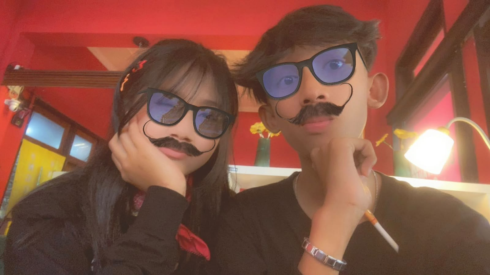
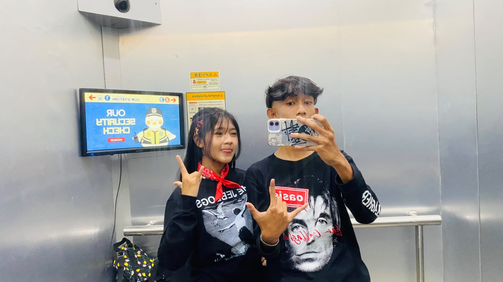
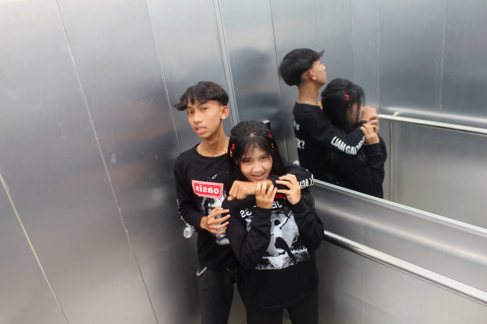
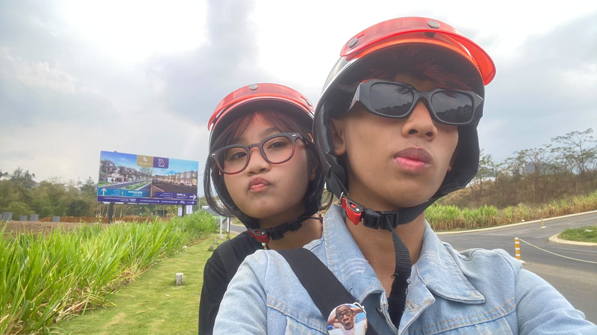
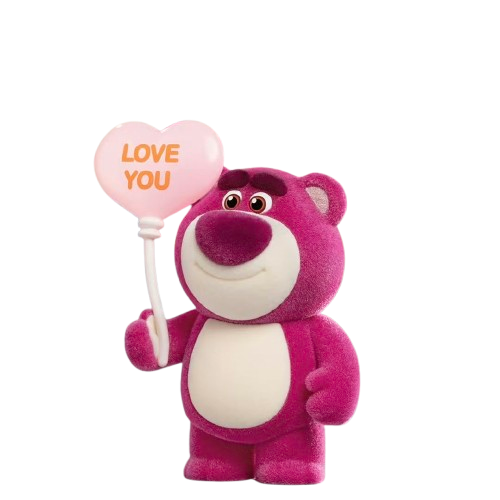

Hi Hevennn
Aku tau akhir-akhir ini aku banyak bikin hati kecil kamu sedih. Aku cuma minta waktu sebentar buat baca ini.
Aku tau akhir-akhir ini aku banyak bikin hati kecil kamu sedih. Aku cuma minta waktu sebentar buat baca ini.

Aku sadar mungkin aku terlalu sering bikin kamu kecewa. Aku ga akan membela diri. Aku cuma mau ngaku kalau aku memang salah.

Aku tahu kata maaf ga langsung menghilangkan rasa kecewa. Tapi aku benar-benar ingin berubah.




Heven...
Aku mau kamu tau satu hal, aku bener-bener tulus sama apa yang aku rasain ke kamu. Aku nggak pernah ngerasa kamu gantungin aku atau sengaja bikin aku nunggu sesuatu. Jadi kamu jangan terlalu OVT dan jangan ngerasa bersalah cuma karena keadaan kita yang sekarang. Kalau dari awal aku ngerasa digantungin, mungkin aku udah pergi dan nggak akan bertahan sejauh ini.
Aku tetap di sini karena aku memang nyaman sama kamu, aku sayang sama kamu, dan aku sendiri yang milih buat tetap ada. Jadi kamu nggak perlu mikir kalau aku bertahan karena terpaksa atau karena nunggu kamu ngasih kepastian. Aku nggak ngerasa kayak gitu sama sekali. Kalau ada sesuatu yang bikin aku nggak nyaman, aku pasti bilang ke kamu, jadi kamu nggak perlu terus-terusan OVT dan nyalahin diri sendiri.
Aku cuma pengen kamu juga nyaman sama aku, nggak perlu takut kalau aku bakal tiba-tiba pergi cuma gara-gara keadaan kita belum jelas. Selama kita masih saling jujur dan saling menghargai, buat aku itu udah cukup.

Terima kasih sudah membaca semuanya. Semoga setelah ini kita bisa sama-sama memperbaiki semuanya.❤️